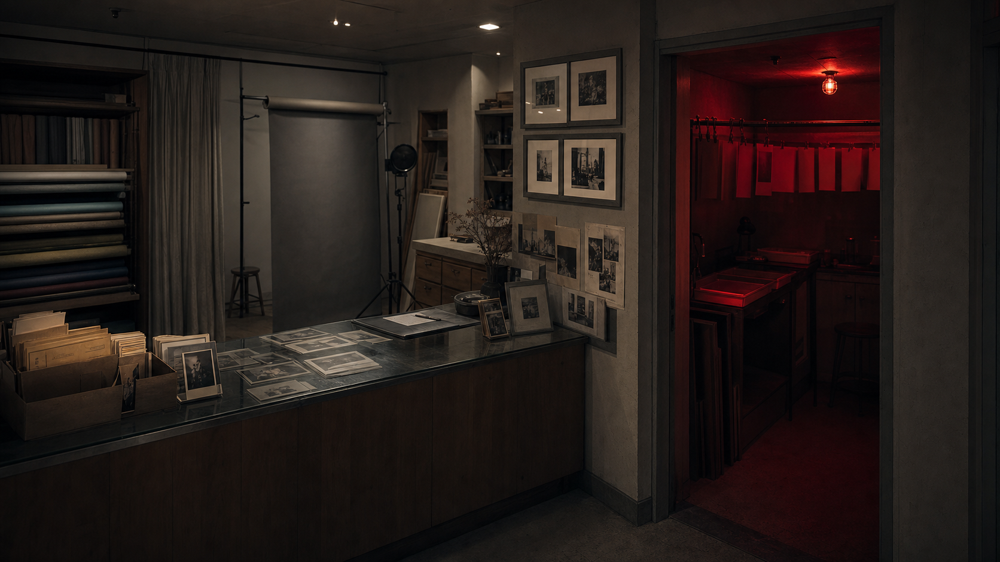

調査対象
予約台帳、納品ファイル、背景紙の3点を軸に資料を読む。
PUBLIC FACE / PRIVATE NOISE
欠番写真の色番号。公式の表情、検索に残った痕跡、匿名掲示板のざわめきを照合し、公開資料だけで違和感の芯を探してください。

七色写真館の閉店セールで、依頼者不明の未現像フィルムが見つかった。受付台帳には番号だけが残り、展示された見本写真には同じ背景が繰り返し写っている。
あなたは写真館の資料整理を依頼され、受付票、現像メモ、オンライン告知を照合する。写っていないはずの人物を探すのではなく、撮影順の矛盾を追う。
予約台帳、納品ファイル、背景紙の3点を軸に資料を読む。
公式ページの説明は整っているが、外部に残った断片は同じ出来事を少し違う順番で語っている。
公式、検索、掲示板を横断し、20問調査で答えを段階的に確認する。